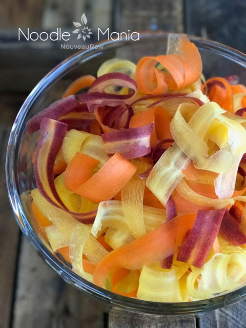

Noodle Mania!

Over the past month, I have been buried in veggie noodles. If a hard, rooted veggie sat still long enough, I spiralized it! My mom was here visiting for the past month and each day I tried to create a new raw dish for her.
She is learning to eat healthier and healthier and I thought veggie noodles would add a lot of excitement into her life. I know I haven’t touched all that there is to spiralize but I did get a good start. I hope that you find some inspiration through them! The main dish that really started all of this was my Raw Veggie Noodle Pad Thai dish that I made for her, which she fell in love with.
I hope that you can find some inspiration from these postings. Check out all the veggies noodles that I have been working on…Noodle Making / Alternatives
Tools used to create noodles:
GEFU Spiralfix Spiral Slicer 13410 $49.95
- Can be used in the left or right hand.
- 4 different widths of cut for creative recipes: Spiral cut across the entire width of the material, 3 mm, 6 mm or 12 mm wide adjustable via adjusting wheel
- Folding lid for easy filling
- Detachable non-slip holding container for safe standing
- Material: stainless steel, ABS plastic, SAN
- Splash-guard lid with drive unit detachable for easy cleaning. Dishwasher-safe
World Cuisine Tri-Blade Plastic Spiral Vegetable Slicer: Approx. $29
- Built for right-handed people.
- This slicer comes with 3 different blades that give you 3 completely different textures and shapes.
- This is the one used in the photo above.
Spiralizer Ultimate: Approx. $29
- This is another type of spiral slicer that gives you some different options, such as angel hair thickness.
Potato Peeler: Approx. $15
- Wash and peel the outer skin off of the veggie.
- Hold the veggie at one end and in a long stroke motion, run the peeler from top to bottom.
- Rotate the veggie in a circular motion and continue peeling until you reach the seeded core (if there is one). Stop once you reach this. Don’t throw it away, use it in a smoothie or salad.
© AmieSue.com